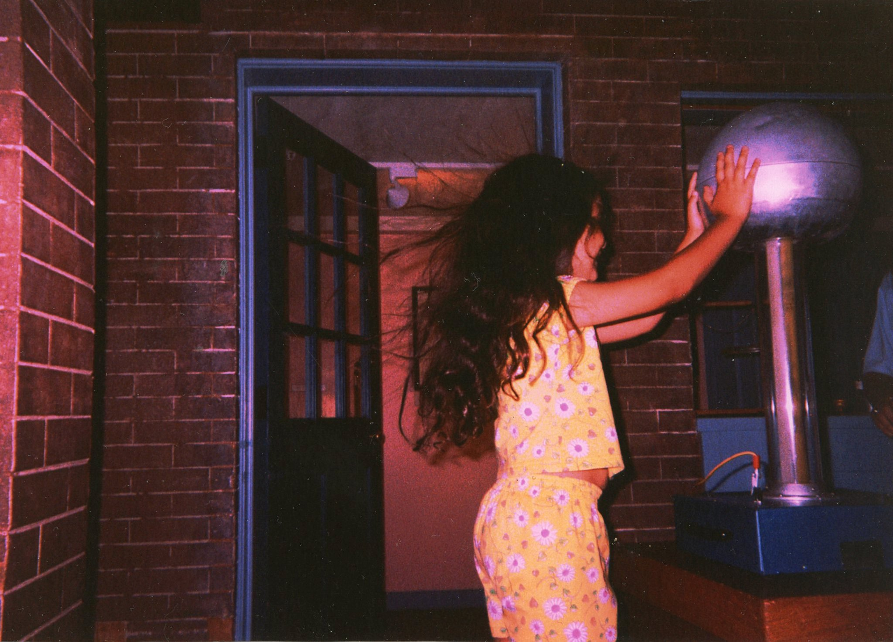

Exhibit A: it started early.
I grew up against the urban sprawl of Philadelphia, across the Delaware River in the relatively small community of Burlington Township, NJ. I am a second-generation Puerto Rican and a first-generation college graduate.
I fell in love with physics in the 7th grade, when my math teacher brought in Brian Greene's The Elegant Universe PBS special. I began my journey of (obsessively) learning as much math and physics as possible.
I graduated high school at 16 and soon enrolled at Florida State University, where I cemented my fascination with physics and started a research career — graduating with honors in both Physics and Applied & Computational Mathematics.
At UCSB I was continually exposed to world-class research in quantum computing. In 2020, during the pandemic, I graduated with my Ph.D. in condensed matter physics. After a year and a half in academia, I found my way into industry — ColdQuanta, then Atom Computing as a Sr. Quantum Applications Engineer, then a stealth startup as a Principal Technical Program Manager.
Now I'm a Technical Solutions Executive for US Government at Quantinuum — and when I'm not doing that, I'm usually somewhere high up, slightly out of breath, and exactly where I want to be.